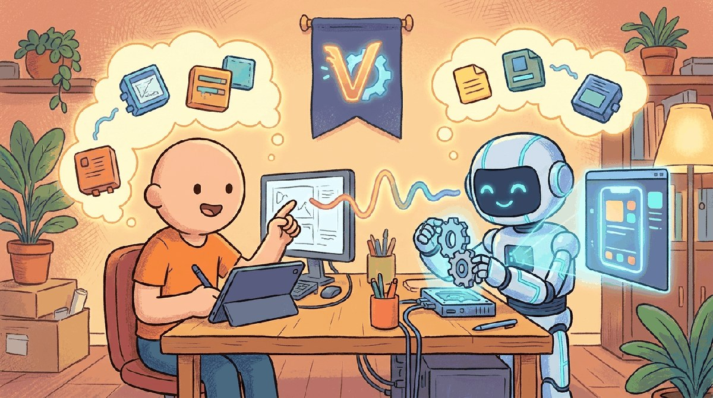

"The prototype that ships in a weekend wins the budget meeting on Monday."
Pip, Vibe-Coding AI Agent
Chapter 67 found the right idea; this chapter ships its prototype. Vibe coding with Claude Code, Cursor, Replit Agent, v0, Bolt, and the small disciplines (prompts as commits, tests as guardrails) that make AI-assisted development productive instead of brittle.
Strategy meets keyboard here. Vibe-coding is the practice of building real working software with an LLM as your pair, riding the rapid prototyping cycle without losing engineering discipline. This chapter covers the workflow, the tools, and the failure modes you have to keep eyes on.
The 2026 landscape that matters: Cursor as the AI-native IDE incumbent, Claude Code as Anthropic's terminal-resident agent, Cline as the open-source IDE extension, Aider as the terminal-native pair-programmer, Windsurf (Codeium, Aug 2024 raise) as the agentic editor, Replit Agent (Sept 2024) for from-scratch app generation in the browser, and Bolt.new (StackBlitz, hit $20M ARR in roughly 60 days after Oct 2024) on the no-code-meets-LLM frontier. Each occupies a slightly different point on the autonomy and host-environment axes; the chapter helps you pick the right one for the task.
Chapter Overview
Vibe coding is the LLM-assisted software development style that compresses the build-test-fix cycle to seconds. This chapter teaches the practical discipline: what vibe coding is and when it pays off, the AI-native IDE landscape in 2026 (Cursor, Claude Code, Cline, Zed, Windsurf, GitHub Copilot Workspace), MVP construction with vibe-coded scaffolds, the vertical-slice pattern in depth, and the keep-pivot-kill triggers that turn a pilot into a product.
Vibe coding changed how MVPs get built. This chapter is the practitioner's syllabus for using LLM-assisted development without inheriting its failure modes.
- Explain when LLM-assisted development pays off and when it does not.
- Compare AI-native IDEs (Cursor, Claude Code, Cline, Zed, Windsurf, Copilot Workspace) on agent depth and cost.
- Apply the vertical-slice pattern to build an MVP that lets real users prove the hypothesis.
- Design pilot keep-pivot-kill triggers that produce a defensible decision.
- Diagnose the systematic mistakes (over-trust, brittle scaffolds, eval blind spots) that vibe-coded MVPs inherit.
Sections in This Chapter
Prerequisites
- Ideation from Chapter 67
- Agent foundations from Chapter 26
- Strong software-engineering hygiene (version control, tests, code review)
- 68.1 Prototyping via Vibe-Coding What vibe-coding is, when LLM-assisted development pays off, the build-test-fix cycle compressed to seconds, Cursor/Claude Code/Cline/Copilot, and the mistakes to avoid.
- 68.2 Vibe-Coding & AI-Assisted Software Engineering Software engineering is being fundamentally reshaped by LLMs.
- 68.3 The AI-Native IDE Landscape in 2026 A practitioner's tour of Cursor, Claude Code, Cline, Zed, Windsurf, GitHub Copilot Workspace, and how they differ on agent depth, repo context, and cost model.
- 68.4 Building the MVP An MVP is the smallest piece of working product that lets real users prove or disprove your hypothesis.
- 68.5 The Vertical-Slice Pattern in Depth Section 67.1 introduced the 80/20 cuts: what an LLM MVP is allowed to skip.
- 68.6 Pilot Triggers: Keep, Pivot, or Kill An internal pilot that runs to its end produces a signal.
What Comes Next
In the next section, Section 68.1: Prototyping via Vibe-Coding, we get to work on the chapter's first concrete topic. After this chapter you continue to Chapter 68: Building the MVP.